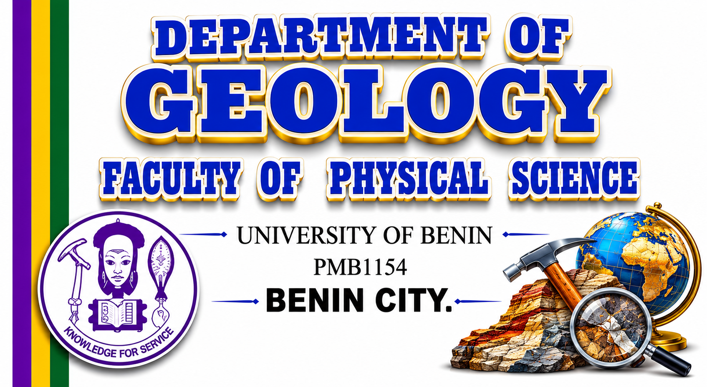

Department of Geology
Knowledge for Service: Earth, Resources, and Society.
We foster intellectual and professional development by providing a strong undergraduate training that emphasizes field techniques, independent research, and practical solutions to the problems of our society.

B.Sc.Honours Degree
FieldOriented Science
FlexibleFirst Two Years
GLY 499Independent Research
Our Focus Areas
Explore Our Disciplines

Philosophy and Objectives
Excellence in Teaching and Research
The Department of Geology seeks to foster the intellectual and professional development of each student. The geology courses provide an in-depth study of basic principles and stress their application in the solution of the problems of our society. The pursuits of geologists, though seldom publicized, provide the material resources of modern civilization.
Learn More About Us →
Future Prospects
Career Opportunities
In Nigeria, geology graduates can find gainful employment in various organizations, including:
- Public and private mining establishments.
- National and multi-national oil companies.
- The Nigerian Geological Survey Department & Federal Dept. of Water Resources.
- River Basin Development Authorities and State Water Boards.
- Earth Science Consultancy Companies.
- Teaching and research positions in Nigerian Universities.
Admissions
4-Year Full-Time Programme (UME)
Candidates seeking admission into this Programme should possess:
- At least five Ordinary Level credit passes in WASC, WAEC SSCE/GCE, NECO SSCE or equivalents at not more than two sittings.
- Subjects must include: English Language, Mathematics, Physics, Biology, and Chemistry.
UME Subjects:
- Use of English
- Any three of Biology, Chemistry, Physics, and Mathematics.
Meet Our Leaders
Head of Department & Department Leaders

Head of Department
DR.S.A.SALAMI(PhD).Ag.
Student Photo Section
Field observation
Active participation in comprehensive outdoor field courses.

Laboratory analysis
Examining earth materials and understanding underlying principles.

Project discussion
Defending independent research projects in specialized areas.